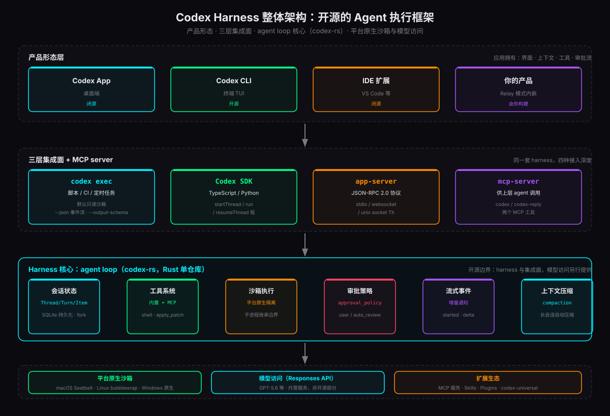
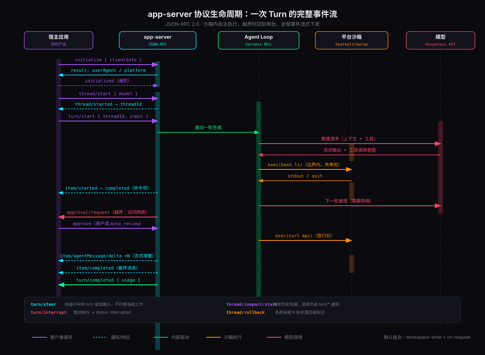
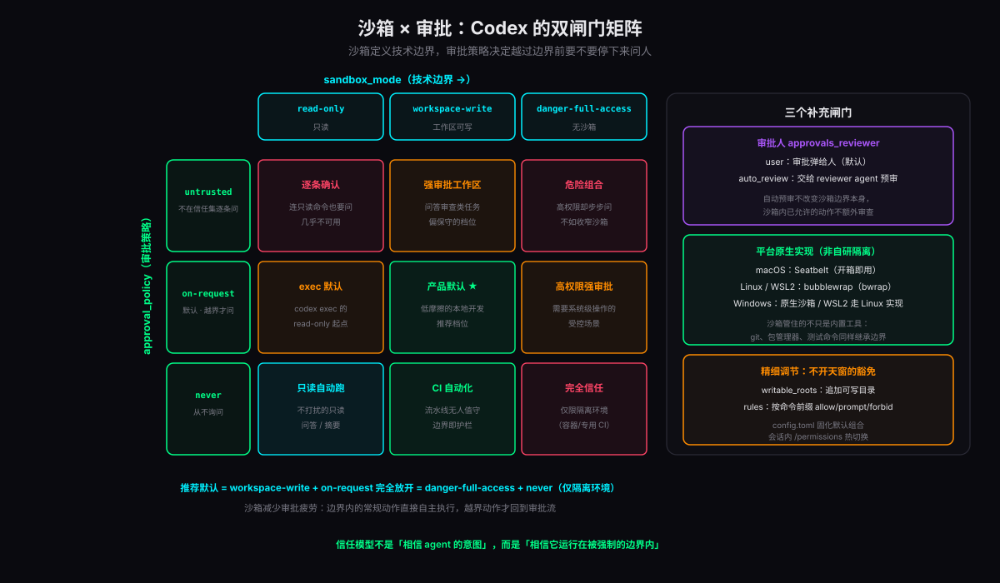

2026 年 8 月 19 日，OpenAI 发布博客《Codex as a platform: build on the open agent harness》，把驱动 Codex App、CLI、IDE 插件的底层执行框架正式平台化——app-server 协议文档、官方 SDK、完整的集成指南一并放出，全部落在 openai/codex 仓库里，Apache-2.0 协议。这个仓库 96.6% 是 Rust，核心逻辑集中在 codex-rs 单仓库工作区，一万多次提交、六百多位贡献者，不是玩具项目。
这件事值得每个做 Agent 产品的团队认真读一遍，因为它开源的不是又一个聊天客户端，而是 Agent 运行时本身：对话状态管理、工具调用、沙箱执行、流式输出、人工审批——一个生产级 Agent 需要而模型不会给你的全部基础设施。本文沿着「harness 是什么 → 怎么接入 → 协议与状态 → 安全模型 → 自动化与反向集成 → 产品化」的路径，把这套框架的设计与实现拆开看。
Harness 是什么：模型外的那层执行系统
一个能干活的 Agent，远不止「提示词 + 模型响应」。它要理解任务、随时间维护上下文、检索相关信息、调用工具、暴露进度、处理失败、在必要的时候请求人工审批、最后交付有用的结果。OpenAI 在博客里把包裹模型的这整套执行系统称为 harness，它的官方定义是：帮助模型收集上下文、推理任务、使用工具、在配置好的边界内运作、请求审批、把工作向前推进。
harness 不是可有可无的胶水层，它的设计能直接改变结果。博客里给了一组硬数据：
再看开源边界。openai/codex 仓库里开源的是 harness 与集成面：Codex CLI、app-server、官方 SDK 都有源码；而模型访问与托管服务在边界之外，走 Responses API 的托管通道。换句话说，你可以白拿一个工业级 Agent 引擎（含全部内部机制），模型调用仍然按量付费。对自研团队来说，这基本消除了「从零造 Agent 运行时」的理由。
最后是产品形态的分工。App、CLI、IDE 插件只是同一套 harness 的三张皮；博客明确说，应用侧应该拥有界面、上下文、工具、审批流，而 harness 负责剩下的执行细节。第四张皮留给了你——这也是「平台」二字的真正含义。
四层集成面：按接入深度选
接入 Codex 不需要所有场景都上最深的那层。官方给了四种深度，从「五分钟跑起来」到「完全掌控生命周期」：
| 集成面 | 形态 | 适合 | 关键能力 |
|---|---|---|---|
| codex exec | 子进程，一次性任务 | 脚本 / CI / 定时任务 | 默认只读沙箱；--json 事件流；--output-schema 结构化输出 |
| Codex SDK | 进程内库调用 | 应用代码里的编程式任务 | TypeScript / Python 双语言；startThread / run / resumeThread |
| app-server | 常驻本地进程，JSON-RPC | Agent 是产品的一部分 | 持久会话、流式事件、审批处理、暴露应用自有工具 |
| mcp-server | MCP 工具服务 | 上层 agent 调用 Codex | codex / codex-reply 两个 MCP 工具，多智能体编排 |
SDK 是性价比最高的一层。TypeScript 侧装 @openai/codex-sdk，三行代码起一个线程并跑完一轮任务；run() 可以反复调用来延续同一线程，历史会话用 resumeThread() 恢复：
Python 侧是 openai-codex（beta），底层控制本地 app-server 的 JSON-RPC 通道，发布包里钉死了配套的 CLI 运行时版本。值得注意的是沙箱可以按轮次覆盖——干活那轮放开写权限，审查那轮收回只读：
三种沙箱预设 read_only / workspace_write / full_access 与后文的沙箱模型一一对应。如果 SDK 的抽象不够用——比如你要自己画审批界面、自己管理线程生命周期——就下沉到 app-server 协议层，这是下一章的主角。
app-server 协议：一次 Turn 的完整生命周期
app-server 是 Codex 驱动富客户端（比如 VS Code 插件）的内部协议，也是把 Codex 嵌进产品的正门。协议基于 JSON-RPC 2.0，但线上的消息省略了 "jsonrpc":"2.0" 头，更紧凑。传输层支持四种：
- stdio（默认）：换行分隔的 JSONL，一行一条消息，本地集成的最省事选择；
- websocket（实验性）：一条文本帧一条消息，配 capability-token / signed-bearer-token 鉴权，请求过载时返回
-32001 Server overloaded； - unix socket：基于默认控制套接字或自定义路径，走 HTTP Upgrade 握手；
- off：只留协议不留监听，纯测试用。
协议里有三个核心原语，理解了它们，整个 API 面就顺了：
| 原语 | 语义 | 关键操作 |
|---|---|---|
| Thread | 用户与 Agent 的一段对话，包含多轮 Turn | thread/start · resume · fork · rollback · compact · archive · delete |
| Turn | 一次用户请求及其触发的全部 Agent 工作 | turn/start · steer · interrupt，收尾发 turn/completed |
| Item | 输入输出的最小单元：消息、命令执行、文件变更、工具调用 | item/started → item/agentMessage/delta → item/completed |

对照时序图走一遍完整流程。连接建立后必须先发 initialize（带 clientInfo 标识你的应用）并等 initialized 通知确认，此前发任何请求都会被拒——握手只允许一次，重复 initialize 报 Already initialized。之后 thread/start 建会话拿 threadId，turn/start 投喂用户输入，Agent 开始干活。干活的每一个动作都变成通知流回来：命令执行是 item/started 到 item/completed，消息是 item/agentMessage/delta 的增量流，直到 turn/completed 携带 token 用量收尾。
动手写一个最小客户端只需要几十行：
协议的几个工程细节值得注意。其一，schema 与版本强绑定：codex app-server generate-ts 和 generate-json-schema 可以从当前 CLI 版本导出 TypeScript 类型或 JSON Schema，客户端类型检查不再靠拍脑袋。其二，实验性方法藏在 capabilities.experimentalApi 开关后面，不开就不给你用——API 面的演进有明确的稳定边界。其三，通知可以按连接退订（optOutNotificationMethods），比如消费不起 delta 流的客户端可以只收完成事件，省掉一地碎流量。
会话状态：SQLite、fork 与回滚
harness 对会话状态的处理，决定了它能不能支撑真实产品。Codex 的答案是三层设计：内存里的活跃线程、SQLite 里的持久化记录、加上一套历史治理操作。
持久化层直接落在 SQLite。thread 的元数据（包括 git 信息）patch 进 SQLite 存储，thread/list 支持游标分页和按模型、来源、归档状态、工作目录、关键词过滤，thread/read 可以不恢复线程就带出完整历史。对你的产品来说，这意味着用户的历史会话天然可检索、可运营，不用自己再攒一套会话库。
历史治理是这一层最有意思的部分。除了常规的 thread/resume，还有两个「时间旅行」操作：
forkedFromId 溯源。适合「同一份调研，三个方向各自展开」的场景：不用复制粘贴上下文，也不用污染原始会话。再配上 thread/compact/start 触发历史压缩（立即返回，进度走 turn/* 和 item/* 通知流），长会话的上下文膨胀有了系统级的解法——这正是 ARC-AGI-3 那组数据背后「context compaction」的产品化落地。
还有一组容易混淆但边界清晰的命令接口：command/exec 在服务端沙箱内跑单条命令，不占用线程和轮次，配 PTY 的写入、resize、terminate 和流式输出；thread/shellCommand 则是用户主动发起的命令，跑在沙箱外、不继承线程的沙箱策略；实验性的 process/spawn 同样在沙箱外。设计取向很明确：Agent 的动作受沙箱约束，人的动作走全权限。
沙箱 × 审批：双闸门安全模型
安全是 Agent 产品落地的第一道坎，Codex 的方案是把「能做什么」和「要不要问」拆成两个正交的闸门：沙箱定义技术边界，审批策略决定越过边界前要不要停下来问人。两个闸门各三档，组合出九种形态：

沙箱三档： read-only 只能读不能写；workspace-write 工作区内可写、可跑常规本地命令，是本地工作的默认低摩擦档；danger-full-access 解除全部文件系统与网络边界。审批三档： untrusted 对不在信任集里的命令逐条问；on-request 默认在沙箱内自主干、越界才问；never 从不询问。官方推荐默认组合是 workspace-write + on-request，Codex App 和 IDE 的「Default permissions」就是这个档位。
沙箱的实现没有自研隔离层，全部走平台原生机制：macOS 用系统内置的 Seatbelt，开箱即用；Linux 和 WSL2 用 bubblewrap（bwrap），装不上时退回需要非特权 user namespace 的捆绑助手；Windows 原生跑系统沙箱，WSL2 下走 Linux 实现。关键细节是沙箱作用于派生出来的命令，而不只是内置文件操作——Agent 调用的 git、包管理器、测试命令统统继承同一边界，子进程没有逃逸口。
双闸门之外还有三个补充闸门。第一，审批人 approvals_reviewer：user 弹给人（默认），auto_review 交给一个 reviewer agent 预审——但自动预审不改变沙箱边界本身，沙箱内已允许的动作不会额外审查，它只是给「边界上的审批请求」换了个处理人。第二，精细豁免：writable_roots 追加可写目录而不用拆掉沙箱，rules 按命令前缀 allow / prompt / forbid，比整体放开权限安全得多。第三，配置固化：config.toml 里写死默认组合，会话内再用 /permissions 热切换。
这套设计换来的信任模型值得抄进任何 Agent 产品：你信任的不是 Agent 的意图，而是它运行在被强制执行的边界内。沙箱把低风险动作的审批疲劳消掉，审批流只留给真正越界的少数动作——自主性与可控性不是对抗关系，而是分层治理。
codex exec：把 Agent 塞进流水线
非交互模式 codex exec 是四层集成面里最轻的一层，也是自动化场景的主力。它的 I/O 约定为管道而生：过程进度走 stderr，最终消息独占 stdout，直接重定向就能用：
--json 打开后，stdout 变成一行一个事件的 JSONL 流，事件类型覆盖 thread.started、turn.started、turn.completed、turn.failed、item.* 和 error；item 里有消息、推理、命令执行、文件变更、MCP 工具调用、网络搜索、计划更新。turn 收尾时还会带 token 用量：
结构化输出是流水线场景的点睛之笔：传一个 JSON Schema，最终响应就按 schema 收口，字段稳定可解析，Agent 的输出直接变成下游程序的输入，中间不需要再套一层「请输出 JSON」的祈祷式提示词。输入侧同样贴心——既支持「提示词为指令、管道内容为上下文」的 prompt+stdin 模式，也支持 codex exec - 把整个 stdin 当提示词。
安全默认值都往紧里收：exec 默认跑只读沙箱，放开用显式的 --sandbox workspace-write（老的 --full-auto 已废弃并告警）；要求命令必须跑在 Git 仓库里，防止破坏性变更无据可查；CI 里鉴权用 CODEX_API_KEY 且只注入单次调用，避免密钥被同进程的不可信代码读走。
官方还给了 GitHub Action 的完整范式（openai/codex-action），权限分离做得干净利落：Action 内部起一个 Responses API 代理托管密钥，Codex 那个 job 只拿 contents: read，跑完把改动序列化成 patch 制品；开 PR 的是另一个 job，拿写权限但拿不到 API key。CI 失败自动修复这类高危自动化，密钥与权限的爆炸半径被压到了最小。
反向集成：Codex 作为 MCP server
前面四层都是「你调 Codex」，还有一层反着来：codex mcp-server 把 Codex 本身变成一个 MCP 工具服务，供上层 agent 调用。tools/list 只有两个工具，小而完整：
| 工具 | 必填 | 可选参数 | 语义 |
|---|---|---|---|
| codex | prompt | approval-policy · sandbox · model · cwd · config · base-instructions · profile | 起一个新 Codex 会话，参数与 Config 结构一一对应 |
| codex-reply | prompt + threadId | conversationId（已废弃的别名） | 带着新输入继续既有会话 |
第一次调用的响应里带 structuredContent.threadId，后续轮次全部靠它续接；审批请求的参数里同样带 threadId，上层 agent 能把审批对话路由回正确的会话。用 OpenAI Agents SDK 编排时，几行代码就能让一个上层 agent 把「写代码」整个外包给 Codex：
官方 Cookbook 把这个模式放大成了完整的多智能体团队：项目经理 agent 写需求文档并按「必需文件是否就绪」门控所有交接，设计师、前端、后端、测试各自带着 scoped 指令和输出目录，把 Codex MCP 当共享的执行引擎，全程 trace 可回放。注意指令里的细节——上层 agent 显式指定 approval-policy 和 sandbox，安全边界不是继承来的，是每次调用显式声明的。
Relay 的启示：界面、上下文、审批都归应用
拆完机制，回到产品问题：在自己的产品里内嵌一个 Codex 级的 Agent，到底长什么样？OpenAI 自己写了个示范应用 Relay——一个虚构的货运运营看板，Agent 蹲在看板旁边。
使用方式很能说明问题：用户不从写提示词开始，而是选中一笔货运，点一个动作按钮（比如 Compare recovery）。应用注入相关上下文，Codex 通过应用自有的 MCP 工具取最新运营数据，Agent 解释可选方案；任何有后果的写操作（比如改签）之前，强制走人工审批。工具改了底层数据，应用刷新自己的业务视图。分工边界清晰：harness 负责 agent loop、会话状态、流式活动、工具交互；产品继续拥有自己的看板、记录和控件。
这里有一条容易被忽略的设计洞察：界面本身就是上下文。博客的原话是——界面告诉 Agent 用户正在看什么，给它正确的工具，也给用户一个地方审视接下来会发生什么。通用聊天框做不到这三件事，这也是「把 Agent 嵌进现有产品」与「再造一个聊天 App」的本质区别。
这条路上已经有真实玩家：GitHub 和 JetBrains 把 Codex 作为 agent provider 接进 JetBrains 系 IDE 的工作流；Cisco 在 Cloud Control 的 App Builder 里用 Codex SDK；Thrive Holdings 和 Crete 把它用进报税工作流，试点处理了 7,000 份申报，准备时间缩短约三分之一。模式高度一致：应用提供上下文、工具和审批，Codex 提供底下的 agent loop。
如果你的团队在评估接入，按这份清单走：
- 场景定位：是「一次性任务」（选 exec）、「应用内嵌任务」（选 SDK）还是「Agent 即产品」（选 app-server）？
- 会话归属：历史会话要不要进你的产品体系？SQLite 持久化 + thread/list 过滤是否够用？
- 安全边界：默认组合建议 workspace-write + on-request；需要豁免时优先 writable_roots 和 rules，而不是整体放开
- 审批体验：审批界面是产品的一部分，app-server 的审批请求要接进你自己的 UI，而不是弹终端
- 工具暴露：业务系统能力通过应用自有 MCP 服务暴露给 Agent，工具改数后由应用刷新业务视图
- 成本核算：harness 开源、模型按量付费，turn/completed 的 usage 字段是成本监控的现成数据源
总结
把整套设计压成三个可迁移的判断：
- harness 是独立于模型的工程资产。ARC-AGI-3 上 13.3% 到 38.3% 的差距说明，执行系统的设计收益可以大到和换模型同量级——值得被单独开源、单独评估、单独投入。
- 分层集成面比单一 API 尊重现实。exec、SDK、app-server、MCP server 四层覆盖了从 CI 脚本到深度产品内嵌的全部深度，接入成本与控制权成正比，不必一步到位也不至于无路可退。
- 安全模型是强制边界，不是意图信任。沙箱与审批双闸门正交组合，平台原生机制保证子进程无逃逸，自动预审不越权改边界——这套分层治理值得每个 Agent 产品照抄。
回到开头那句「Agent 产品随便造」：OpenAI 把引擎、传动、刹车都开源了，你只需要决定车长什么样、开去哪里。模型能力还在快速迭代，但运行时的工程问题——状态、工具、沙箱、审批、流式——已经被这套 harness 用生产级方案回答了一遍。与其在这些问题上重新发明轮子，不如把省下的力气花在真正构成产品差异的地方：工作流本身。
参考资料
- OpenAI · Codex as a platform: build on the open agent harness（2026-08-19 博客原文） developers.openai.com/blog/codex-as-a-platform
- GitHub · openai/codex（Apache-2.0 仓库，codex-rs 单仓库工作区） github.com/openai/codex
- Codex · App Server（JSON-RPC 协议、Thread/Turn/Item、生命周期与 API 总览） developers.openai.com/codex/app-server
- Codex · Non-interactive mode（codex exec 事件流、结构化输出与 CI 模式） developers.openai.com/codex/noninteractive
- Codex · Codex SDK（TypeScript / Python 库与沙箱预设） developers.openai.com/codex/sdk
- Codex · Use Codex with the Agents SDK（mcp-server 双工具与多智能体编排） developers.openai.com/codex/guides/agents-sdk
- Codex · Sandboxing（双闸门语义、平台原生实现与配置键） developers.openai.com/codex/concepts/sandboxing